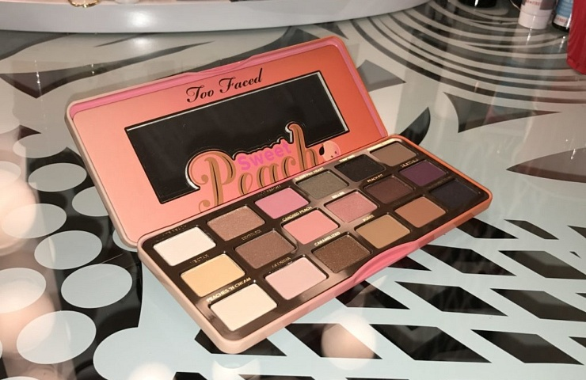

Blog

Dont' Be Tardy For The Peach Party!
Its finally back! The Two Too Faced Sweet Peach Palette is back! You do not want to be tardy for this one! Its time to discuss all the rage that is this palette and what it has to offer! Scent First, lets talk about this beautiful scent. It smells delightful! It literally smells just like a peach tree. It’s a very...